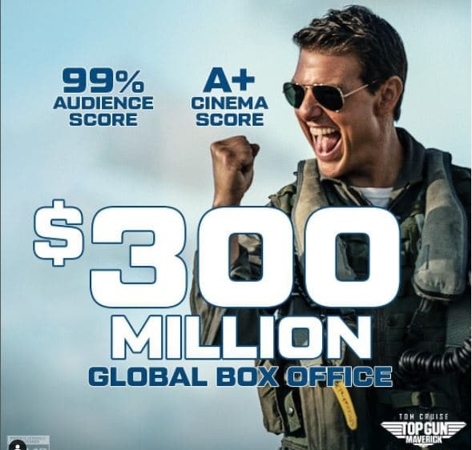

Faits divers
Top Gun a été un succès au box-office et a propulsé la carrière de Tom Cruise et de Kelly McGillis.
177 Million
Aux États-Unis
15 Million
De budget
353 Millions
Dans le monde entier
3 570 719 entrées
En France
Présentation de la direction artistique
L'idée de donner une suite à Top Gun émerge dès 2010 lorsque Paramount Pictures propose le projet au producteur Jerry Bruckheimer et au réalisateur Tony Scott. Christopher McQuarrie est approché pour écrire le scénario, dans lequel le personnage de Tom Cruise, Maverick, n'aurait qu'un rôle mineur. Le scénario est finalement écrit par Peter Craig, Justin Marks et Ashley Miller. La participation de Tom Cruise est ensuite remise en cause.
Il faut se souvenir de ce qu’était Top Gun à sa sortie en 1986, à savoir d’abord un film pour garçons qui aspiraient à devenir des hommes. Où des pilotes de chasse sexy arborent leur corps d’éphèbe et portent des 501 moulants le temps d’un match de beach-volley. Soit l’hyper virilité dans ce qu’elle a de plus cliché et, sans doute aussi, de plus abject. Il n’empêche, beaucoup de quarantenaires, voire de trentenaires, se sont vus en Maverick, héros désinvolte dénué de super-pouvoirs, incarné par un Tom Cruise qui, a l’époque, n’était surtout connu que pour son apparence. Depuis, l’acteur est devenu une machine hollywoodienne, un faiseur de (grand) spectacles, nanti d’une carrière parsemée de (vrais) moments de bravoure.
Date de naissance : 6 juin 1981 (Âge: 41 ans)
Directions artistiques : Top Gun : Maverick, L'escadron suicide...
Décors conçus : Éternels, Space Jam : Nouvelle Ère, Space Jam - Nouvelle ère
Distinctions : Art Directors Guild Award de l'excellence dans les décors de film d'époque
Nominations : Art Directors Guild Award de l'excellence dans les décors de film d'époque...
Directions artistiques : Top Gun : Maverick, L'escadron suicide...
Décors conçus : Éternels, Space Jam : Nouvelle Ère, Space Jam - Nouvelle ère
Distinctions : Art Directors Guild Award de l'excellence dans les décors de film d'époque
Nominations : Art Directors Guild Award de l'excellence dans les décors de film d'époque...
Top Gun : Maverick est un film américain réalisé par Joseph Kosinski, sorti en 2022. Instructeur à Top Gun, « Maverick » (Tom Cruise) forme puis dirige des pilotes de chasse en vue d'une mission spéciale, aussi ardue que dangereuse. Il s’agit de la suite du film Top Gun de Tony Scott, sorti en 1986, dont l'action se déroulait principalement à Topgun, l'école de formation au combat aérien de la marine américaine. Il est présenté en avant-première au CinemaCon avant une présentation hors compétition au festival de Cannes 2022.
"Les seules personnes qui ont des F-14 sont en Iran, et elles en ont six en tout et pour tout." On le sait, Tom Cruise adore tourner des scènes d'action. Plus les cascades sont impressionnantes, plus l'acteur est heureux. Pourtant, sur le tournage de Top Gun : Maverick, il y a quelques séquences qu'il n'a pas pu tourner en personne : l'armée américaine a refusé que le casting pilote des avions de chasse. Ils sont disponibles en peu d'exemplaires et coûtent environ 70 millions de dollars chacun au gouvernement américain, donc impossible pour Tom de prendre les commandes d'un F-18. Le réalisateur Joseph Kosinski (lui-même grand amateur de vitesse) et son équipe ont cependant pu tourner à bord de tels engins, à condition qu'ils soient pilotés par des soldats spécialement entraînés pour les diriger. Plusieurs plans ont ainsi pu être filmés dans les airs, à bord d'avions de chasse, et Variety détaille comment la Paramount a réussi à assembler une jolie collection pour tourner cette suite, 36 ans après Top Gun.
Le film reçoit des critiques très positives. Sur l'agrégateur américain Rotten Tomatoes, il récolte 97 % d'opinions favorables pour 315 critiques et une note moyenne de 8,2⁄10. Le consensus suivant résume les critiques compilées par le site : « Top Gun: Maverick réussit un exploit encore plus délicat qu'une plongée inversée 4G, livrant une suite tardive qui surpasse son prédécesseur dans un style extrêmement divertissant ». Sur Metacritic, il obtient une note moyenne de 78⁄100 pour 60 critiques.
- Le film est dédié à Tony Scott, mort en 2012, réalisateur du premier film Top Gun et qui avait envisagé la réalisation de cette suite.
- Le Darkstar que pilote Maverick au début du film, inspiré du SR-71 Blackbird, porte le logo de la division Skunk Works de la société Lockheed, laissant supposer que la base du Désert des Mojaves est celle de Groom Lake (connue sous le nom de Zone 51).
- Jennifer Connelly conduit une Porsche 911 S de 1973, en hommage au personnage de Charlotte « Charlie » Blackwood qui conduisait une Porsche 356 Spider. Tom Cruise pilote de nouveau la même Kawasaki GPZ 900R présente dans le premier film, ainsi qu'une Kawasaki Ninja H2R.
- Le F-14 présent dans le film est réalisé en images de synthèse, le dernier F-14 américain ayant volé pour la dernière fois en 2006.
- Comme dans le premier film, le pays ennemi n'est pas nommé, les visages des pilotes n'apparaissent pas et ils ne prononcent aucune parole. La présence d'avions de cinquième génération, de F-14 Tomcat, la cocarde évoquant le Simorgh, l'environnement montagneux et la cible de la mission (un site d'enrichissement de combustible nucléaire) suggèrent fortement l'Iran à certains commentateurs.
- Dans la version originale, la voix de Val Kilmer, alias Tom « Iceman » Kazansky, a été recréée grâce aux algorithmes d'une société spécialisée. L'acteur a dû fournir quarante années d'archives audio.
- Le P-51D Mustang de Maverick appartient à Tom Cruise depuis 2001. Il le pilote dans les scènes de vol.
- Le Darkstar que pilote Maverick au début du film, inspiré du SR-71 Blackbird, porte le logo de la division Skunk Works de la société Lockheed, laissant supposer que la base du Désert des Mojaves est celle de Groom Lake (connue sous le nom de Zone 51).
- Jennifer Connelly conduit une Porsche 911 S de 1973, en hommage au personnage de Charlotte « Charlie » Blackwood qui conduisait une Porsche 356 Spider. Tom Cruise pilote de nouveau la même Kawasaki GPZ 900R présente dans le premier film, ainsi qu'une Kawasaki Ninja H2R.
- Le F-14 présent dans le film est réalisé en images de synthèse, le dernier F-14 américain ayant volé pour la dernière fois en 2006.
- Comme dans le premier film, le pays ennemi n'est pas nommé, les visages des pilotes n'apparaissent pas et ils ne prononcent aucune parole. La présence d'avions de cinquième génération, de F-14 Tomcat, la cocarde évoquant le Simorgh, l'environnement montagneux et la cible de la mission (un site d'enrichissement de combustible nucléaire) suggèrent fortement l'Iran à certains commentateurs.
- Dans la version originale, la voix de Val Kilmer, alias Tom « Iceman » Kazansky, a été recréée grâce aux algorithmes d'une société spécialisée. L'acteur a dû fournir quarante années d'archives audio.
- Le P-51D Mustang de Maverick appartient à Tom Cruise depuis 2001. Il le pilote dans les scènes de vol.